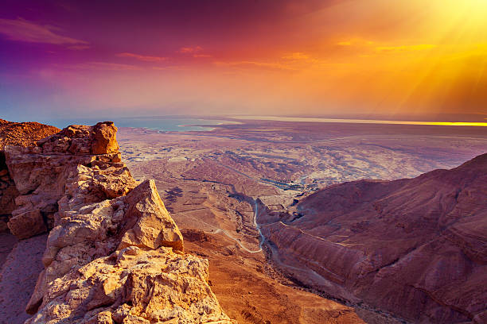
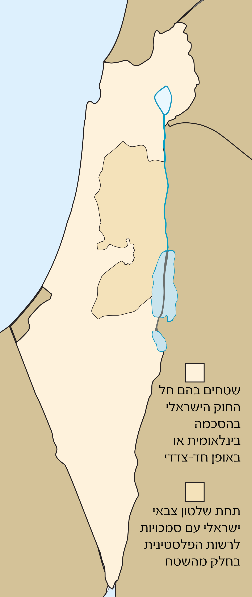

יסודות מדינת ישראל

מדינה עצמאית
מדינה עצמאית באשר היא, מתקיימת רק כאשר היא מכילה בתוכה ארבעה יסודות מהותיים. ללא עקרונות אלו, מדינה לא תוכל לקיים עצמה. (בהקשר לריבונות, יש צורך בהכרה מהאו"ם כדי להכריז על עצמאות.)
שטח
איך נוצרו גבולות מדינת ישראל
מדינת ישראל קיבלה את שטחה ההתחלתית על ידי המנדט הבריטי אשר מסר את שאלת המנדט לאום, אשר המליץ לחלק את המדינה לשתי מדינות יהודית וערבית
מאוחר יותר מדינת ישראל הרחיבה את שטחה על ידי מלחמות עם מדינות שכנות.
גבול מדיני
גבול מדיני הוא גבול המפריד שתי מדינות הקרובות בשטחן הגיאוגרפי.

שטח קרקעי
שטח של מדינת ישראל עליו הכריזה ריבונות הוא 22,072 קמ"ר. ושטח עליו היא שולטת הוא 27,826 קמ"ר
שטח אווירי
המרחב האווירי של מדינת ישראל מוגדר כחלק של אטמוספירה אשר נמצאת מעל שטח הריבוני הכולל שטחים יבשתיים ומים טריטוריאליים . שטח אווירי מעל שטחים יבשתיים - 22,072 קמ"ר. שטח אווירי מעל שטחים ימיים - 12 מייל ימי מהחוף
גבולות עם מדינות אחרות
- גבול עם מצרים מהווה כ- 208 ק'מ.
- גבול עם ירדן מהווה כ- 309 ק'מ.
- גבול עם סוריה מהווה כ- 92 ק'מ.
- גבול עם לבנון מהווה כ- 79 ק'מ.
שטח ימי
גבול ימי של מדינת ישראל מהווה כ- 12 מייל ימי מהחוף. אך אזור הים שזכויות למשאבי טבע הנמצאות בו משויכות לישראל משתרע למרחק של 370 קילומטר מהחוף. מי החופים של מדינת ישראל מהווה כ- 6 מייל ימי.
ריבונות
ריבונות היא הזכות להפעיל סמכות עליונה על אזור גאוגראפי כגון:
מדינה או שבט ריבונות מבטאת את זכאותה של המדינה לנהוג בשטח בו מדובר מנהג בעלים.
ריבונות לרוב מוענקת לממשלה או לסמכות פוליטית
מדינה או שבט ריבונות מבטאת את זכאותה של המדינה לנהוג בשטח בו מדובר מנהג בעלים.
ריבונות לרוב מוענקת לממשלה או לסמכות פוליטית
מדינת ישראל היא מדינה ריבונית, המנהלת את ענייני החוץ והפנים שלה בעצמה. מבחינת ענייני פנים, ישראל מנוהלת על ידי שלוש רשויות: הכנסת – הרשות המחוקקת, הממשלה – הרשות המבצעת ומערכת בתי המשפט – הרשות השופטת. פועל בה גוף אחראי בעל סמכות ענישה, הוא המשטרה. לישראל המנון, דגל, סמל ומטבע הייחודיים לה. מבחינת יחסי חוץ, ישראל מקיימת יחסים דיפלומטיים עם מרבית מדינות העולם, למדינת ישראל צבא, הנקרא צה"ל (צבא הגנה לישראל), האחראי על ביטחון המדינה.

אוכלוסייה במדינת ישראל
בתחום האוכלוסייה נכללים אנשים הגרים במדינה באופן קבוע.
תיירים אינם נכללים כחלק אוכלוסיית המדינה.
המושג אוכלוסייה כולל את כל האנשים שגרים באופן רצוף וקבוע בשטח המדינה ובכל מדינה מספר שונה של תושבים וגם אין קשר בין שטח המדינה לבין גודל האוכלוסייה בה.
אזרחות במדינה נקבעת על פי חוקי המדינה ותנאים. לאזרחים ישנם חובות כמו- מיסים ,צבא ועוד... אזרחים מקבלים זכויות מיוחדות- לבחור ולהיבחר למוסדות השלטון.
המושג אוכלוסייה כולל את כל האנשים שגרים באופן רצוף וקבוע בשטח המדינה ובכל מדינה מספר שונה של תושבים וגם אין קשר בין שטח המדינה לבין גודל האוכלוסייה בה.
אזרחות במדינה נקבעת על פי חוקי המדינה ותנאים. לאזרחים ישנם חובות כמו- מיסים ,צבא ועוד... אזרחים מקבלים זכויות מיוחדות- לבחור ולהיבחר למוסדות השלטון.

אוכלוסיה מוכרבת משני סוגים של תושבים
תושבים אזרחי המדינה - המדינה היא זו הקובעת על פי חוק מי הוא אזרח ואיזה תנאים אדם יכול להיות אזרח במדינה. על האזרח למלא את חובותיו כאזרח (למשל: התגייסות לצה"ל, תשלום מסים וכו'), אך יש להם גם זכויות כמו לבחור ולהיבחר למוסדות השלטון ועוד.
תושבים שאינם אזרחי המדינה - תושבים אלו הם תושבים זמניים במדינה, הם אזרחי מדינה אחת המתגוררים באופן זמני במדינה אחרת. הם מחויבים לציית לחוקי המדינה, אולם אינם מקבלים זכויות פוליטיות כמו אזרח מדינה
מיהו אזרח במדינת ישראל?
שני חוקים מסדירים את האזרחות בישראל:
• חוק השבות: קובע כי כל מי שהוא יהודי ועולה למדינת ישראל יקבל אזרחות במדינה. נקבע כי יהודי הוא מי שנולד לאם יהודייה או שנתגייר ואינו בן דת אחרת.
• חוק האזרחות: קובע כי אזרחות ישראלית תינתן לבאים:
• מי שעונה לתנאים של חוק השבות.
• ב. מי שעלה ארצה לפני קום המדינה ונשאר בה לאחר קום המדינה.
• ג. מי שנולד במדינת ישראל.
• ד. מי שעלה למדינת ישראל.
שלטון ומשטר
שלטון הוא אדם או קבוצת אנשים המחזיקים במונופול לגיטימי על הכוח, כלומר: קבוצה של אנשים אשר קיבלו אישור ממקור סמכותם (העם,וכו'). השלטון במשטר דמוקרטי מתחלף אחת לזמן מוגדר מראש (בישראל, למשל תתקיימנה בחירות כל 4 שנים), זהו אחד מעקרונות הדמוקרטיה.
שיטת הממשל בישראל היא דמוקרטיה פרלמנטרית. בראש המדינה עומד נשיא המדינה, אך זה אינו מחזיק בסמכויות רבות ותפקידו הוא סמלי בעיקרו.
ממשלת ישראל היא הרשות המבצעת, בראשה עומד ראש הממשלה, אשר ממונה על ידי הנשיא שבוחר לתפקיד את האדם בעל הסיכויים הטובים ביותר להרכיב ממשלה מבין חברי הכנסת המכהנים
ממשלת ישראל היא הרשות המבצעת, בראשה עומד ראש הממשלה, אשר ממונה על ידי הנשיא שבוחר לתפקיד את האדם בעל הסיכויים הטובים ביותר להרכיב ממשלה מבין חברי הכנסת המכהנים
ממשל הוא תחום החיים בו נעשות ההחלטות הרשמיות והכוללות של חברה או מדינה. הממשל מכיל את המוסדות המרכזיים של החברה, האחראים על עיצובה הכולל, ואינם מייצגים תחום חלקי בה.
תפקידיו העיקריים של הממשל: קביעת החוק המוגדר לכל החברה בה פועל הממשל, וממסד נורמה מסוימת בה. קבלת החלטות זמניות המתמודדות עם מציאות פנימית או חיצונית שנוצרה.
תפקידיו העיקריים של הממשל: קביעת החוק המוגדר לכל החברה בה פועל הממשל, וממסד נורמה מסוימת בה. קבלת החלטות זמניות המתמודדות עם מציאות פנימית או חיצונית שנוצרה.